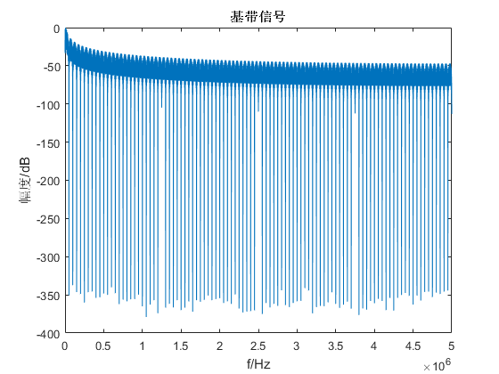
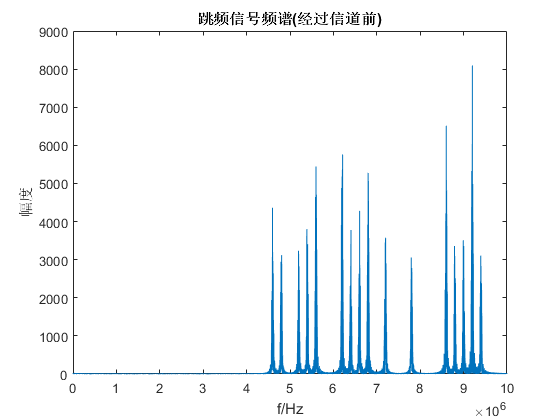
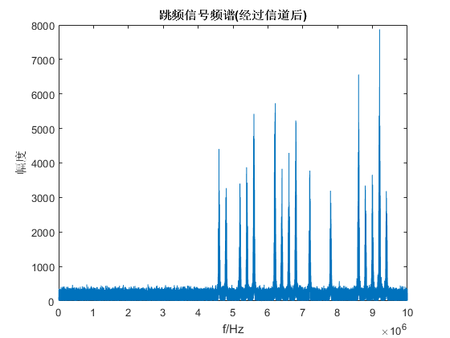
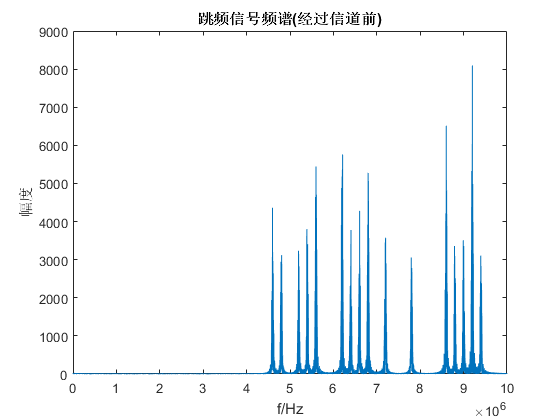
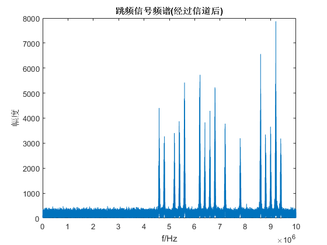

Contents
简易跳频系统分析演示
调制-->跳频-->信道-->解跳-->解调-->误码分析
clc;clear;close all;
系统参数设置
Rb = 5e4; % 速率：50Kb/s Tb = 1 / Rb; % bit间隔 hopping = 1000; % 跳频速率 bitsPerHop = Rb / hopping; % 每跳bit数目（必须为整数） samp = 200; % 过采样倍数 fs = samp*Rb; % 采样率 BW = 5e6; % 跳频带宽 freqNum = floor(BW / (Rb*4)); % 跳频频点数目 freqInterval = BW / freqNum; % 频点间隔 freqSeq = ([0:freqNum-1] - floor(freqNum/2)) * freqInterval; % 跳频频点序列 carrier = 3e6; % 跳频中心频率 carrierSeq = carrier + freqSeq; % 发送时跳频频点序列
传输信息参数设置
SYNC_BIT_NUM = 40; % 同步bit数目 MSG_BIT_NUM = 1024; % 消息bit数目 TX_BIT_NUM = SYNC_BIT_NUM + MSG_BIT_NUM; % 需要发送的bit数目 HOP_NUM = ceil(TX_BIT_NUM / bitsPerHop); % 发送所有的bit需要的跳频点数 %（由于总的发送bit数目不一定是每跳bit数目bitsPerHop的整数倍，所以，构造为bitsPerHop的整数倍，在解调后去除多余bit即可） EXCEED_BIT = HOP_NUM * bitsPerHop - TX_BIT_NUM; % 多余的bit
构造发送序列
SYNC = randi([0 ,1] , 1 , SYNC_BIT_NUM); % 同步二进制序列（用一串随机序列代替） MSG = randi([0,1] ,1 ,HOP_NUM*bitsPerHop - SYNC_BIT_NUM); % 消息字符号 TX_BIT = [SYNC , MSG]; % 构造整个发送bit序列 TX_BIT_MAT = reshape(TX_BIT , bitsPerHop , HOP_NUM); % 将待发送序列转成一个矩阵，每一行是1个跳频频点下需要发送的bit数目 TX_BIT_MAT = TX_BIT_MAT'; % 行：跳数，列: 每跳对应的bit序列
调制
[biNRZ , msgModMatrix] = MSKmodulator(samp, TX_BIT_MAT); % 复基带调制矩阵
跳频
fhIndex = randi([1 , freqNum] , 1 , HOP_NUM); % 根据跳频点数生成随机频点序列索引 txFHtable = carrierSeq(fhIndex); % 根据随机频点序列索引生成跳频频点（收发频点保持一致才可以解跳） txFHmodulatedMat = FHmodulator(samp , msgModMatrix , txFHtable , fs); % 跳频后的信号（包括粗同步与精同步）
信道
snr = 10; txFHmodulated = reshape(txFHmodulatedMat' , 1 , numel(txFHmodulatedMat)); % 将矩阵形式的信号转化为实际的1维信号 rcvNoisy = awgn(txFHmodulated , snr); % 添加噪声 rcvNoisyMat = reshape(rcvNoisy , numel(txFHmodulatedMat) / HOP_NUM , HOP_NUM); % 为了便于后面的解跳/解跳操作, 将1维信号还原为矩阵形式 rcvNoisyMat = rcvNoisyMat'; % 行：跳数，列: 每跳对应的带噪声的调制信号
解跳
rcvBBmat = FHdemodulator(samp , rcvNoisyMat , txFHtable , fs);
差分解调
rcvBB1dim = reshape(rcvBBmat' , 1 , numel(rcvBBmat)); % 还原信号为连续形式 rcvBBsamp = reshape(rcvBB1dim , samp , numel(rcvBB1dim)/samp); % 转换成每samp一个单元(即以bit为采样单元) dmdBit = imag(conj(rcvBBsamp(samp,:)) .* rcvBBsamp(1,:)) >0; % 差分解调 dmdBit = dmdBit(1:end-EXCEED_BIT); % 根据冗余bit数目去除多余bit orignalBit = TX_BIT(1:end-EXCEED_BIT); % 根据冗余bit数目去除发送序列中多余的bit
计算误bit数
errBitNum = sum(orignalBit~=dmdBit);
频域分析结果
figure(1) bb = reshape(biNRZ' , 1 , numel(biNRZ)); % 基带 fftshow( bb , fs , 'single'); xlabel('f/Hz'); ylabel('幅度/dB'); title('基带信号'); figure(2) fftTool( bb , fs , '基带信号'); xlabel('f/Hz'); ylabel('幅度'); figure(3) plot((0:length(txFHmodulated)-1)/length(txFHmodulated)*fs , abs(fft(txFHmodulated))); xlabel('f/Hz'); ylabel('幅度'); title('跳频信号频谱(经过信道前)'); figure(4) plot((0:length(rcvNoisy)-1)/length(rcvNoisy)*fs , abs(fft(rcvNoisy))); xlabel('f/Hz'); ylabel('幅度'); title('跳频信号频谱(经过信道后)');
  
 